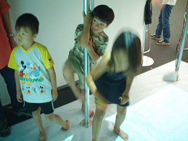
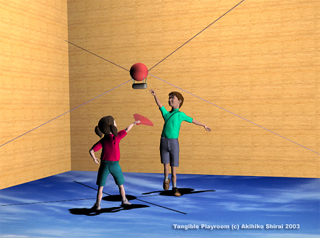

A virtual reality entertainment system for future children.
Date:2001-2003(the first phase, 2nd phase is continued in Laval France)
Abstract
"Tangible Playroom" was designed as a future computer entertainment system for children. It can provide some Virtual Reality contents with a safe force feed back and a large floor image. Players can interact with content's world using their full body. To feel force feedback, player grasps a tangible (graspable, perceptible by touch) grip like a cork ball. It is linked to encoder motors by strings. Then it can input 3D location to system. When player touch to some objects, system calculate a correct force feedback to player via string and tangible grip. Our system can provide high quality force representation with safe rather than metal linked arm system.
"Penguin Hockey" is a typical demonstration content. It is a simple 3D hockey game playing with automotive penguins. The pucks are snowmen. To get points, players should throw snowmen to the enemy's goal hole. Our software has a real-time dynamics simulator then children can interact with computer-generated characters with real reactions.
Tangible Playroom
|
[A sketch of Tangible Playroom]
[Prototypes of Tangible Playroom] |
Tangible Playroom was designed as a future computer entertainment system for children. "Tangible" means "graspable" or "perceptible by touch". It is important experience for children especially infancy periods (3-5 years old). Haptics or touchable Virtual Reality can render these stimulus. However, there are not so many examples for children using haptics hardware. So this project focused on "interesting haptic experience for children" . We feel some problems about current game content or system. Then we focused 3 points below: (1) Can play in normal room space like a living room. These are our philosophy of design. For example, normal room space is a natural educational space for children. Playing by body is felt a little tire. But it stops unlimited play and motion insufficiency. Current game system is not enough for these points. (3) means natural physics, dynamics and Artificial Intelligences. We think rendering physics like falling or crashing is good for edutainment (education + entertainment) stance. Recently, some current game systems have this concept. Our prototype system has a tangible grip made by a cork ball. The 4 encoder motors and strings are pulling it. When player grasp it, our system can calculate its 3D location using length of 4 strings. If it collides to other objects in Virtual Reality world, each motors pulls the tangible grip via strings. This method named as SPIDAR (SPace Interface of Artificial Reality, M.Sato, 1991). It can represent force feedback safety. For making immersive image projection, we use floor screen. It allows players to walk and touch. And when we set our projector to 4m height, the floor image size is 2x3m large. If children's tall height is 100-150cm then. It can cover the all of their view. For controlling encoder motors, we use our self developed amp box using USB.2.0. It connected to PC. Same PC can use for generating graphics. Then our system can run least one PC. The goal of our project is implementing encoder motors and projectors to room corner's column. However, we move this prototype system for research or demonstration now.
|
Penguin Hockey
|
"Penguin Hockey" is a
typical demonstration content for Tangible Playroom. It is a simple 3D hockey game playing with
automotive penguins. The pucks are snowmen. To get score,
players should throw snowmen to the enemy's goal hole. This software has a real-time dynamics simulator. All of objects behave under rigid body dynamics. They also have their weight and center of gravity. When players interact with computer-generated characters like penguin or pucks, they can feel the difference of weight between penguin and puck. A typical play style is collaborating with the automotive penguin of same team and throwing in pucks to enemy's goal hole. But subsidiary players who doesn't have a grip can join same time, because the floor screen is too large for children's view. If subsidiary (or just waiting) players help for main player to tell whole characters location. It means making a cooperative communication using off-line space in our system. We think it is important design for children's game system. When the penguins of rival groups block their goal by their movement. Player should push penguins by full body movement. If player make a collision to them, system represents heavy feel and penguins' voice. This content was designed like interactive bricks toy having automotive wills and dynamics. Then to get a win isn't so important. Collaborating with penguin, throwing in pucks sharply or touching some characters are just interesting experiences. There are results from visitor who played "Penguin Hockey" at an exhibition. In this case, we installed our prototype system at an event that was prepared for children including handicapped individuals (August 1-7th, 2001 in Osaka Japan). From all players, we got their impressions by questionnaire. There were 361 persons who had played in 7 days. No injured children are there. Numbers of players in the age of 12 or below was 336 (93%). Average age in this group was 7.53. The youngest was aged 1. The ratio of gender is 57/42 (boys/girls). 97% of players answered [Joyful/Amused]. 93% of players could touch the virtual objects. In answer to the question, “How do you feel when you touch these Invisible objects?” 45% replied with [wonder/mysterious] and 29% replied with [Amused]. We can find a difference about reply for this question between 3-5 (infancy) and higher age. Infancy feel haptics as [Amused] but higher age feel it as [wonder/mysterious]. We think this result reasons by growing of recognition. We also asked for the player’s favorite TV game title, and we asked that, “In addition, do you like our “penguin hockey” rather than your favorite?” later. Then 59% children said [Yes]. Please see video to get detail of activities(MPEG1, 29.5MB).
|
[A Screen shot of "Penguin Hockey"]
[A design of characters]  [Promotion movie of "Penguin Hockey"] |
Future vision
|
[A geographic sandbox]  [A hot air balloon simulator] |
Tangible Playroom is an generic entertainment
system. Then it should be able to represent other VR worlds.
We plan some of content examples for Tangible Playroom now. Especially, it can represent force and haptics with safe. Additionally, tangible grip can change for other tangible toys. It looks like ROM cartridge on current game systems. Upper picture is one of examples for future application, "A geographic sandbox". It looks likes a Virtual Kindergarten's sandbox. But floor screen shows players neighborhood map. The girl can make and touch a dune her self. Now a boy is kicking to break the dune but he will miss because of it is just an image. She just can touch her geo design. Lower picture is one of examples using image recognizer, "A hot air balloon simulator". The tangible grip is a hot air balloon. A girl grasps a fan. Image recognizer can detect her motion, then it makes a wind to the balloon. Tangible Playroom can represent force then they can feel a wind force via balloon. Of course, it can change to other tangible toy like a plane. These examples are just a plan now. However this isn't a dream when our system becomes usual. |
Requirements for demonstration
To install our demonstration system and show "Penguin Hockey", we need more than 2x2m large floor and semi dark room for projection. To project the proper size images, we need more than 4m length. If the roof is higher than 4m, we need a hanger for projector. But if it's lower, we'll prepare a mirror to reflect the images from the projector which is set on the floor, so, we need to hang a mirror on the ceiling. And the projector may cost 225W. We also prepare Windows PC (notebook) which costs 75W. And connect amp box for haptic via USB2.0. which costs 150W.
Concept
Akihiko SHIRAI
Partner
Shouichi HASEGAWA, Yasuharu KOIKE and Makoto SATO.
Acknowledgements
We would like to thank Masaru Iwashita, Luo Yan Lin, Jeong Sung Ju and Lykke Silfwerbrand for checking this document. For system development, we also thank to Masaharu Inoue, Jeong Seungzoo, Shinichiro Tagami, Atsushi Toyama, Nobuaki Fujii, Takuya Hirai, Naoki Matsumoto and Takefumi Miura.
Prizes
Best Multilingual and/or Omnilingual award, ACM SIGGRAPH SIGKIDS 2003. (June, 2003)
Scientific encouragement award, Virtual Reality Society of Japan. (March, 2003)
Best paper award, Transaction of society for art and science. (March, 2003)
Best paper award, NICOGRAPH International (May, 2002)
Contact
Akihiko SHIRAI
Japan Science and Technology Corporation
Precision and Intelligence Laboratory, Tokyo Institute of Technology
4259 Nagatsuta, Midori-ku, Yokohama JAPAN, 226-8503
Tel:+81-45-924-5050 Fax:+81-45-924-5016
Last updated at 2003/06/24.